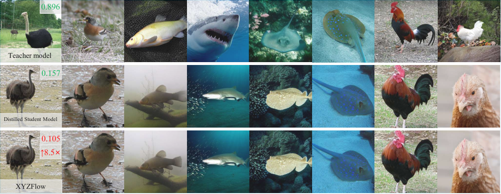

ICML 2026 · arXiv:2608.12276
XYZFlow: Scaling Multidimensional Shortcut Flows for Efficient Generative Modeling
Jinxiu Liu · CUHKXuanming Liu · WestlakeKangfu Mei · Johns HopkinsYandong Wen · WestlakeWeiyang Liu · CUHK
A multidimensional flow-matching framework for high-fidelity, few-step image generation.

AbstractHigh-fidelity image generation faces a trade-off between speed and quality. Diffusion models produce strong visuals but require costly iterative sampling. Existing efficient methods mainly distill pretrained models into few-step samplers, a challenging process that depends heavily on teacher-model quality. In this paper, we introduce XYZFlow, a framework that rethinks efficient generation through multidimensional scaling of flow matching. Unlike single-step mappings, XYZFlow enhances expressivity by making probability paths more identifiable and learnable through structured multidimensional conditioning. We view autoregressive modeling as implicit flow straightening, where richer context reduces trajectory ambiguity. XYZFlow realizes this idea through two orthogonal dimensions: temporal scaling, which uses non-Markovian conditioning on the full denoising history; and spatial scaling, enabled by Next Shortcut Prediction, which sequentially generates patches using preceding patches’ denoising trajectories as priors. Experiments show that XYZFlow achieves state-of-the-art performance, with 7.2–8.5× teacher speedups and competitive FID, while Next Shortcut Prediction delivers superior quality-latency trade-offs over model scaling or step reduction.